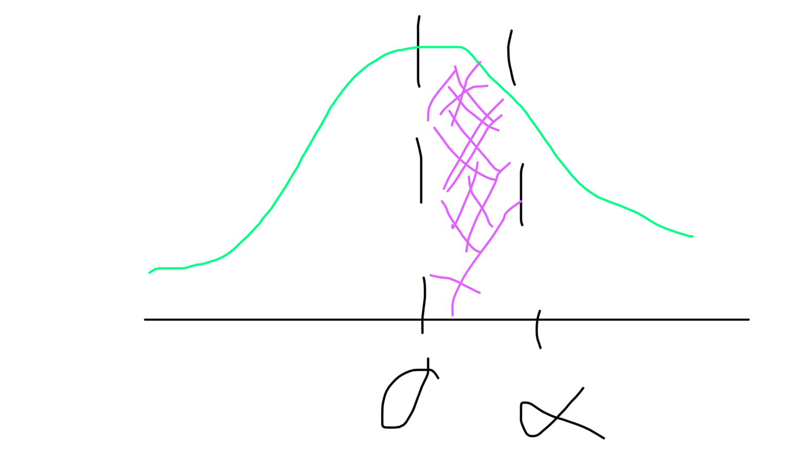

The GAS package was written for Generalized Autoregressive Score models, which include GARCH as a special case. This paper hones in on how to use the package to estimate Value at Risk (VaR) and Expected Shortfall (ES). These are common financial metrics that can be relatively involved to compute. Let’s dive in.
First, a brief discussion on Value at Risk. An informal definition (per Wikipedia): given a portfolio, a time horizon, and a probability p, the VaR is the maximum possible loss over the time horizon excluding the tail to the left of p. More directly, given a profit and loss distribution \(X\), the p-VaR is the \((1-p)\) quantile of \(Y:=-X\)
I find this a little unintuitive — can we just define the p-VaR as the p-quantile of X? Likely not, but a question for the group.
Ok, how about Expected Shortfall? ES is a similar risk measure, defined at a given level q as the expected return on a portfolio in the worst q% of cases (again, from Wikipedia). This one is a bit funkier mathematically:
If our VaR distribution is approximately normal (it probably isn’t), the ES might look something like this:

Where the purple shaded region is our ES.
The plain-English definition is given as the mean loss of portfolio value, given a loss is occurring at or below a given quantile.
Despite the fact that our VaR likely isn’t normally distributed, the underlying portfolio value may be well-approximated by a normal distribution. My reading is that it is more common in practice to use a t-distribution as they have fatter tails (implying more realistic modeling of potential downside risk). Both the normal and t-distributions have closed form solutions for Expected Shortfall. The normal distribution with mean $\mu$ and variance \(\sigma^2\) has \(\alpha\)-ES
We see that ES is monotonically increasing in the variance and monotonically decreasing in the mean.
The dynamics in \(\alpha\) are a bit more interesting. Discussion point: what should they look like for this special case? Keep in mind that alpha is on the unit interval.
Now that we’ve covered the fundamentals of what we’d like to estimate, how do we go about estimating it? Note that for both risk measures, we need a notion of the underlying density. We don’t necessarily want to assume normality here: this is where Generalized Autoregressive Score models come into play. Here we’ll use Siem Jan Koopman’s AENORM article ‘Generalized Autoregressive Score Models’.
Let’s start with the building blocks.
We have a dependent variable \(y_t\) Nx1, a parameter vector \(f_t\), and a vector of (exogenous) covariates \(x_t\) . The available information at time t is given by \(\{f_t, \mathcal{F}_t \}\)
Where \[\mathcal{F}_t = \{\{ y_1,...,y_t\},\{f_0,...,f_{t-1}\},\{x_1,...,x_t\}\}\]
and that \[y_t\sim p(y_t|f_t\mathcal{F}_t)\]
We also have a vector of static parameters \(\theta\)
The omega here is a vector of constants, A and B are coefficient matrices, and s is some (appropriately selected) function of historical data. Koopman refers to this as the familiar autoregressive updating equation -- if it isn’t familiar at this juncture, it might be when we show that GARCH models are a special case of GAS models. The omega and the coefficient matrices here are all functions of our static parameter vector theta.
The update equation is where the Score part of Generalized Autoregressive Score models come into play. We have an update equation for our $f_t$ given by \(s_t = S_t \cdot\nabla_t\) with \[ \nabla_t = \frac{\partial \ln p(y_t | f_t,\mathcal{F}_t; \theta)}{\partial f_t} \] , \[S_t = S(t,f_t,\mathcal{F}_t;\theta)\] where S is a ‘matrix function’. We get to pick it! It simply scales the score.
If we choose S to be \[S_t = \mathcal{I}^{-1}_{t|t-1}, \mathcal{I_{t|t-1}} = \mathbb{E}[\nabla_t\nabla_t']\] and are clever in the remainder of our model specification, we’ll end up with the GARCH model. Aside: if I remember correctly, this S is the Fisher information matrix.
Onto the GARCH model: assume \(y_t=\sigma_t\varepsilon_t\) where epsilon is iid Gaussian with zero mean and unit variance. Koopman lays out as an exercise to show that the GAS(1,1) model reduces to
I don’t have time for this exercise at the moment but it could yield interesting discussion. Note that this equation is the familiar GARCH(1,1), and that GAS(1,1) = GAS(p=1,q=1) where p and q are the order of the initial autoregressive update equation.
Ok, so we’ve covered the basics of GAS models, VaR, and ES. Let’s get into the paper we want to talk about: Downside Risk Evaluation with the R Package GAS. We’ll change our notation up a bit at this juncture to keep consistent with the paper. Namely,
Note that the only time-varying parameter here is the scale/volatility parameter $\sigma_t$. The location parameter, mu, and the skewness and shape parameters xi and nu are time-invariant.
From here, the authors go on to derive the update equation and note that both a Gaussian and Student-t distribution are special cases of the SKST distribution with appprpriate assumptions on the skewness and shape parameters. We’ll gloss over this bit for now.
The objective here is to backtest VaR and ES models. The authors describe two approaches to backtesting VaR:
“Unconditional Coverage tests look at the ratio between the number of realized VaR violations observed from the data and the expected number of VaR violations implied by the chosen risk level, α, during the forecast period”
Conditional Coverage tests examine the distribution of VaR exceedences/violations: if correct conditional coverage is attained, these should be independently distributed over time.
They then specify a DQ test that’s ultimately a Wald test on the joint hypothesis that the ‘hitting series’ (VaR exceedences) has zero coefficients for all lags of appropriate order, as do the lagged coefficients on VaR in the same equation. This test is asymptotically \(\chi^2(L+2)\), and the original paper outlining the test suggest lag-order 4. I am guessing this depends on the underlying frequency of the data, but the authors note that this has become a standard assumption.
The authors go on to discuss model comparison - we’ll skip this for now but it does have practical implications in terms of the ultimately selected model.
We’ll also omit discussion of joint VaR and ES comparison as it depends on the quantile loss function established in the prior section. We’ll hit on it when running their empirical analysis … Now!
We’ll follow along with the paper directly moving forward, starting by loading in data.
library(GAS)
Attaching package: 'GAS'
The following object is masked from 'package:stats':
residuals
library(parallel)library(dplyr)
Attaching package: 'dplyr'
The following objects are masked from 'package:stats':
filter, lag
The following objects are masked from 'package:base':
intersect, setdiff, setequal, union